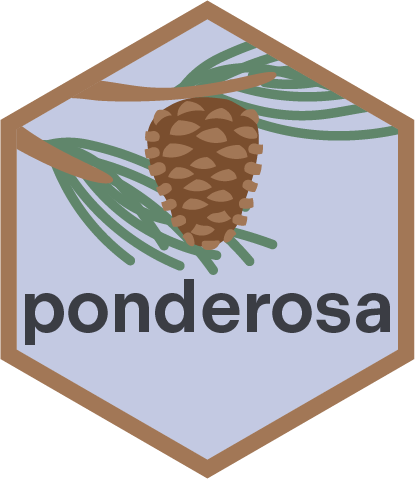
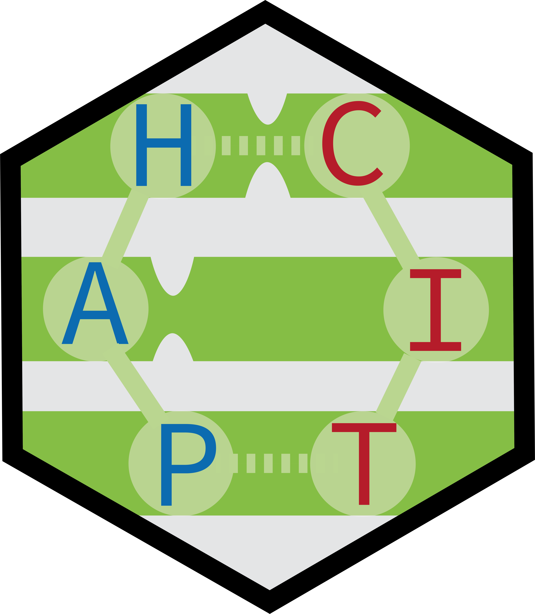
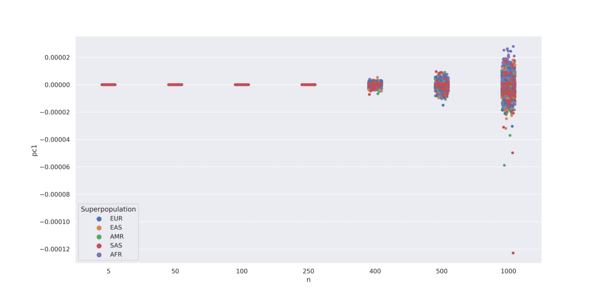

I am a computational geneticist and postdoctoral researcher at UCSF in the Ziv Lab. My PhD at Brown University with Sohini Ramachandran focused on population genetics methods, including algorithms for pedigree inference and IBD-based genome phasing.
At UCSF, my work centers on cancer genomics and immunogenomics. I study how germline genetic variation shapes the tumor immune microenvironment — including pan-cancer GWAS of transposable element expression in tumors and its relationship to immune activation. I also work on germline predictors of immune-related adverse events in patients receiving cancer immunotherapy, and on polygenic risk score methodology for breast cancer and immunotherapy-related toxicities.

Genealogical relationship inference through identity-by-descent segments. Designed for large-scale datasets and endogamous populations.
IBD · Relatedness · Pedigrees
An interactive tutorial exploring PCA to visualize genetic variation across the 1000 Genomes Project. Data available on request.

A new version of PONDEROSA for unphased data using convolutional neural networks (CNN) to learn IBD sharing patterns.